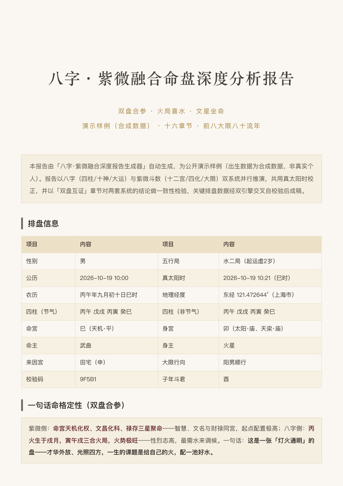
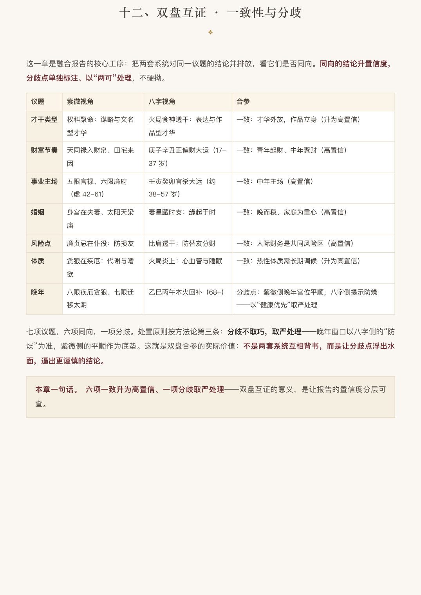

从出生数据，到一本
可收藏的命理研报
双引擎排盘 · 双盘互证 · 量化质检 · 一键生成 22-30 页 A4 深度报告。
把「排盘、分析、成稿、排版」四件事，交给一条完整的开源管线。


为什么是「双盘」
单系统的圆，总有缺口；两套系统并排推演，才看得见共识与分歧。
双引擎排盘
紫微用 iztro、八字用 lunar-javascript：四柱十神、藏干纳音、神煞、刑冲合害、精确起运的大运序列，一份数据全带齐。
真太阳时校正
经度修正叠加均时差，跨日界自动回退日期，晚子时按通行口径排盘——西部出生不再卡在时辰边界上翻船。
双盘互证
专章把两套系统对才干、财富、事业、婚姻、体质的结论并排放：同向升置信，分歧取严处理，不硬拗任何一家。
量化质检
双引擎交叉自校验 + 跨章去重器（5-gram 重合率与重复长句检测）：关键数据零臆造，冗余无所遁形。
十六章节框架
命局总论、飞星四化、大运流年、七大领域（紫微主笔 + 八字侧写）、双盘互证、八十流年时间轴。
出片级排版
暖纸色设计系统（#FAF7F1 / #6A2E33 / #A98746），A4 全书分页，封面到祝词完整闭环，打印即可收藏。
样例内页
以下页面来自演示报告（合成出生数据），点开大图可见完整排盘信息与文案风格。
四步成书
在支持 Agent Skills 的环境里，一句「出一份融合报告」即可走完全程。
输入出生数据
公历生日、时刻、性别、出生地——一行 JSON。
双引擎融合计算
真太阳时校正 → 双盘排盘 → 互证锚点，全量落盘为唯一数据源。
深度文案与互证
十六章节长文撰写，两盘视角分工，去重器把关。
一键出 PDF
暖纸色排版渲染为 A4 全书，可直接打印收藏。
安装与使用
开源免费（MIT）。需要 Node ≥ 18 与本机 Chrome。
完整命令与内容框架见仓库 SKILL.md / README.md
数据诚实
每个星曜、宫位、干支都出自程序排盘与双引擎交叉自校验；AI 只做解释，不做臆造。
内容深度优先
每章有唯一主人，一个结论只深讲一次；总结只收束不重播，去重器量化把关。
精度诚实
到「大限 / 小限 / 流年 / 大运（步）」为止，不伪造流月流日级断言。
吉凶并陈
只给能量主题与风险敞口——趋避的主动权，永远在命主本人手中。